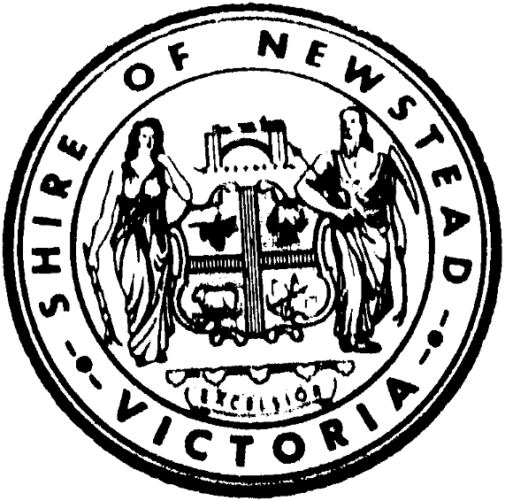
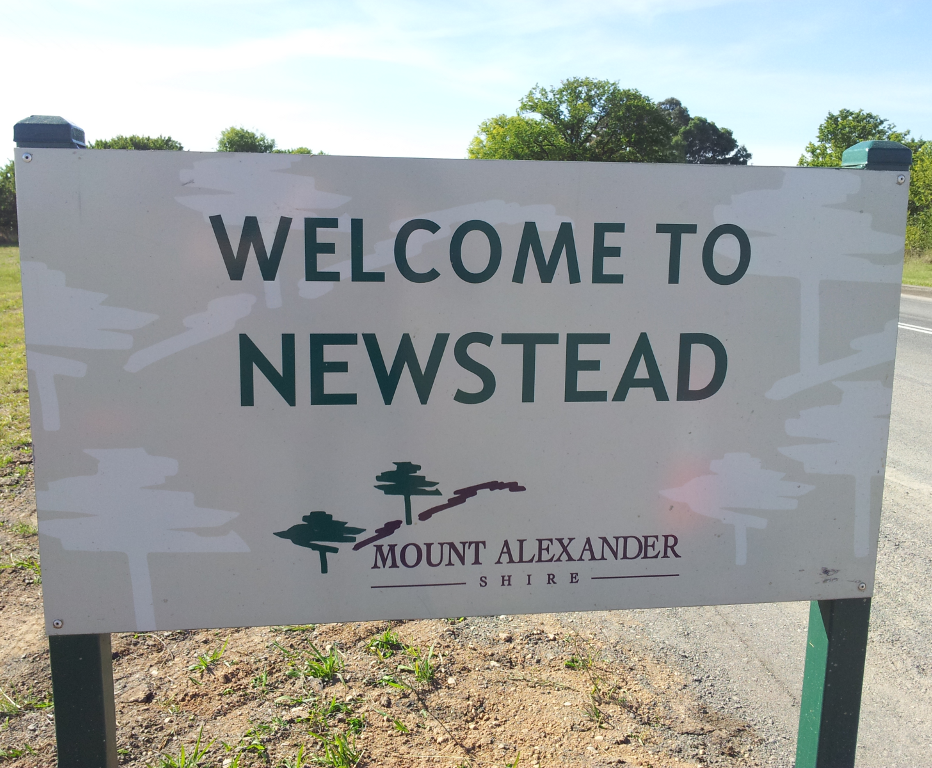
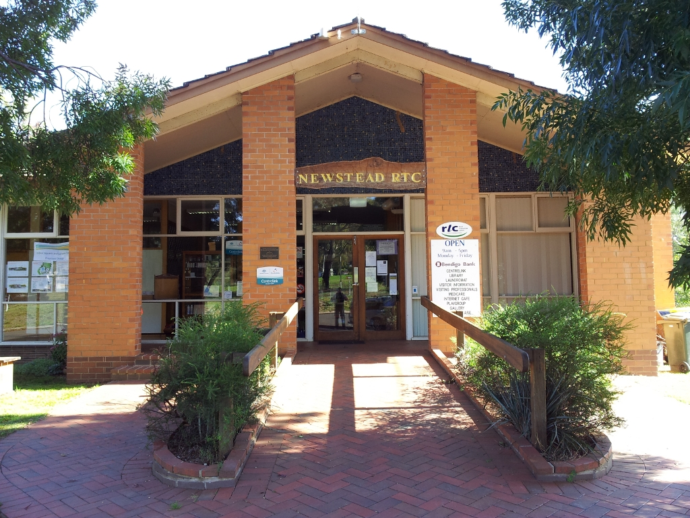
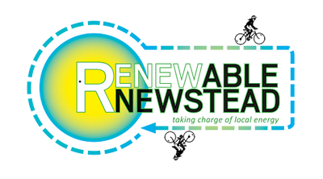
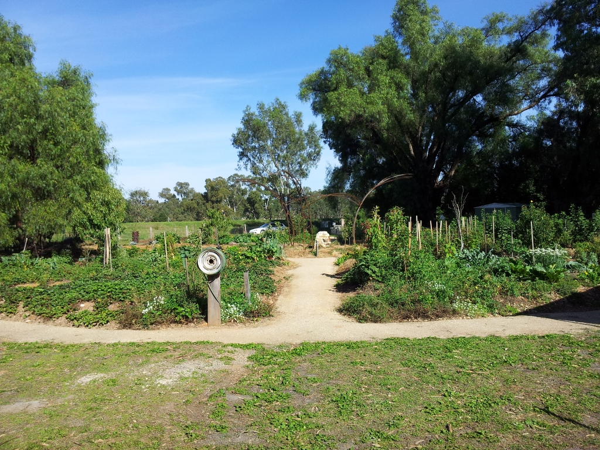
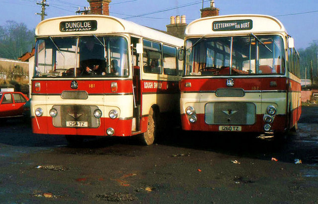
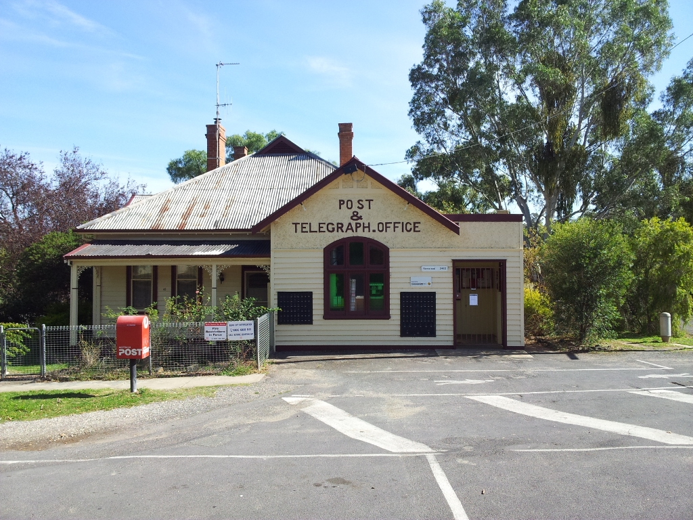

Newstead:
Australia's Most
Open Source Town
Dave Hall
TEDxBendigo
15 Mar 2012
Dave Hall

Newstead

Location

Shire Founded 1860

Shire Abolished 1995


{kind=link}
Free Culture


{kind=link}
Rural Transaction Centre

Renewable Newstead

Community Garden

Community Bus

Technology in Newstead

Internet Cafe

WiFi Network Background

Use of the Network
"[a] great thing about the town is it offers free wi-fi in the town centre, something that has been very hard to come by on our travels"Dru Lynch, California, USA
National Broadband Network
The Future
Thanks
Connect
- Twitter @skwashd
- Google+ gplus.to/skwashd
- Github github.com/skwashd
- LinkedIn linkedin.com/in/davehall
- Website davehall.com.au
Download
github.com/skwashd/tedxbendigo2012-newstead
Visit Newstead!
Directions from Bendigo
License

Newstead: Australia's Most Open Source Town by Dave Hall is licensed under a Creative Commons Attribution-NonCommercial-ShareAlike 3.0 Australia License.
Based
on a work at github.com.
All photos taken by Dave Hall, unless otherwise noted. Nestead aerial photogrpah supplied by Trouble Magazine